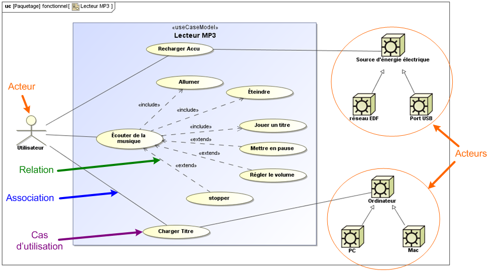
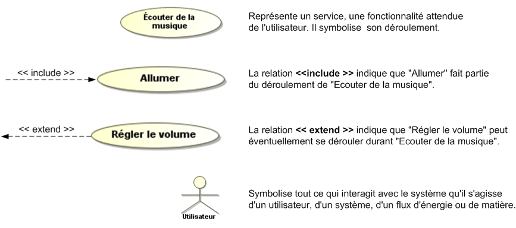
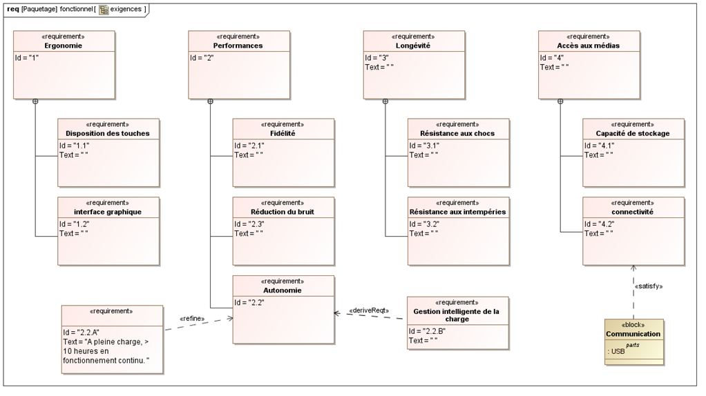
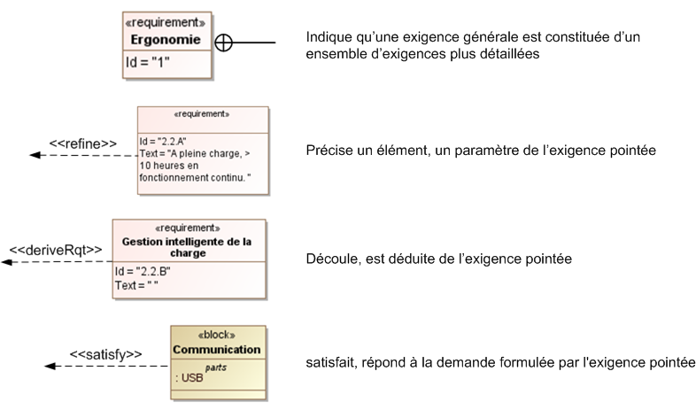
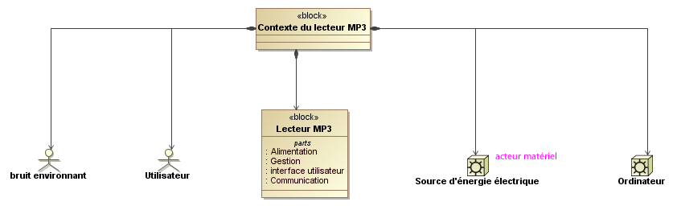

Description fonctionnelle
3 diagrammes interviennent dans la modélisation fonctionnelle d'un système.
Le diagramme des cas d'utilisation (UCD)

Diagramme des cas d'utilisation d'un lecteur MP3 (partiel)

Le diagramme des exigences
Il répertorie et organise les exigences de toute nature énoncées dans le cahier des charges (les contraintes fonctionnelles, les performances attendues, les limites, les exigences commerciales, etc). Exemple

Diagramme d'exigence partiel d'un lecteur MP3

Le diagramme de contexte
Il complète éventuellement la description fonctionnelle en présentant tous les éléments externes qui influencent le système étudié et le système lui même.

Diagramme de contexte d'un lecteur MP3
Created with the Personal Edition of HelpNDoc: Easily create Help documents